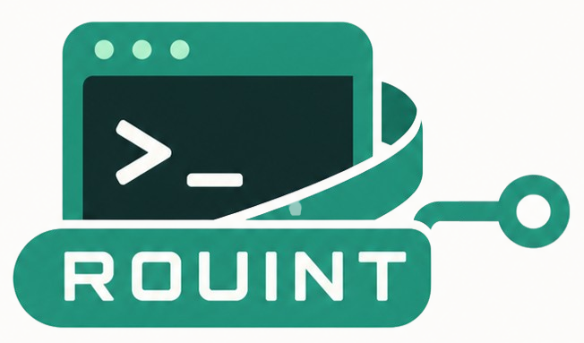

Rouint
CLI-Based API Endpoint Management & Testing Tool
Define endpoints once, organize them locally, and test them against local, staging, or production environments directly from your terminal — zero GUI overhead, backed by system curl transparency.

| Package Name | rouint |
| Version | 1.0.0 |
| Registry | pypi.org/project/rouint/ |
| Runtime | Python 3.9+ |
| Dependency | system curl on PATH |
| Data Storage | .rouint-data/ (local) |
Why Rouint was created
GUI API clients like Postman or Insomnia are feature-rich but heavy, resource-intensive, and often force proprietary cloud sync. Pure curl commands, on the other hand, are lightweight and fast but cumbersome to write, edit, and parameterize repeatedly across different base URLs.
Rouint bridges this gap. It provides a terminal-native, local-first API client that wraps system curl. You define your API endpoints once using template placeholders (e.g. /api/v1/users/{user_id}), set up your base URL environments (local, staging, production), and execute tests directly inside your terminal with instant feedback.
Core Features & Capabilities
-
01 // Endpoint Templates with Placeholders:
Define endpoints with{placeholder}syntax. Rouint automatically prompts for parameter values and URL-encodes them at test time. -
02 // Interactive 7-Step Creation Wizard:
Guided CLI wizard covering Method, Path, Headers, Auth, JSON Body, Multipart File Attachments, and Labeling. Features step-back navigation viaEsckey. -
03 // Multi-Environment Base URL Switcher:
Configure environment URLs (e.g.local → http://127.0.0.1:8080,production → https://api.myapp.com) and select the target environment dynamically before each run. -
04 // Authentication & Token Auto-Reuse:
Supports Bearer Token and Custom Header authentication. Automatically detects Bearer/JWT tokens in response payloads and offers to save them as temporary tokens for subsequent requests. -
05 // Terminal Visualizer & Metrics:
Displays full-width adaptive terminal panels showing pretty-printed JSON for REQUEST, RESPONSE, and performance METRICS (HTTP status, response time, response size). -
06 // Local-First & Security-First:
All configs are stored inside your project's.rouint-data/directory. An automated.gitignoreensures credentials, environments, and tokens never leak into source control.
Command Reference
CLI Workflow$ rouint init
Created .rouint-data/
├── .gitignore # Keeps tokens out of git
├── config.json # Workspace settings
├── registry.json # Endpoint registry
├── endpoints/ # API template files
├── environments/ # Base URLs
└── bodies/ # Request payload cache$ rouint add-base-url
Choose action: Add a new base URL
Label: local
URL: http://127.0.0.1:8080
Added environment 'local' → http://127.0.0.1:8080$ rouint add-new-api
Step 1: Method → POST
Step 2: Path → /api/v1/users/{user_id}/posts
Step 3: Headers → Content-Type: application/json
Step 4: Auth → Bearer Token
Step 5: Body → {"title": "Hello", "body": "World"}
Step 6: Files → None
Step 7: Name → Create User Post
[Press Esc at any step to return to previous]$ rouint start-test
Select API: Create User Post
Select Env: local (http://127.0.0.1:8080)
Fill {user_id}: 42
┌────────────────── REQUEST ──────────────────┐
│ POST /api/v1/users/42/posts │
├───────────────── RESPONSE ──────────────────┤
│ HTTP/1.1 201 Created │
│ {"status": "success", "id": "p_984"} │
├────────────────── METRICS ──────────────────┤
│ Status: 201 | Time: 48ms | Size: 1.2 KB │
└─────────────────────────────────────────────┘Ready to streamline your API testing?
Install Rouint from PyPI or inspect the source code on GitHub.